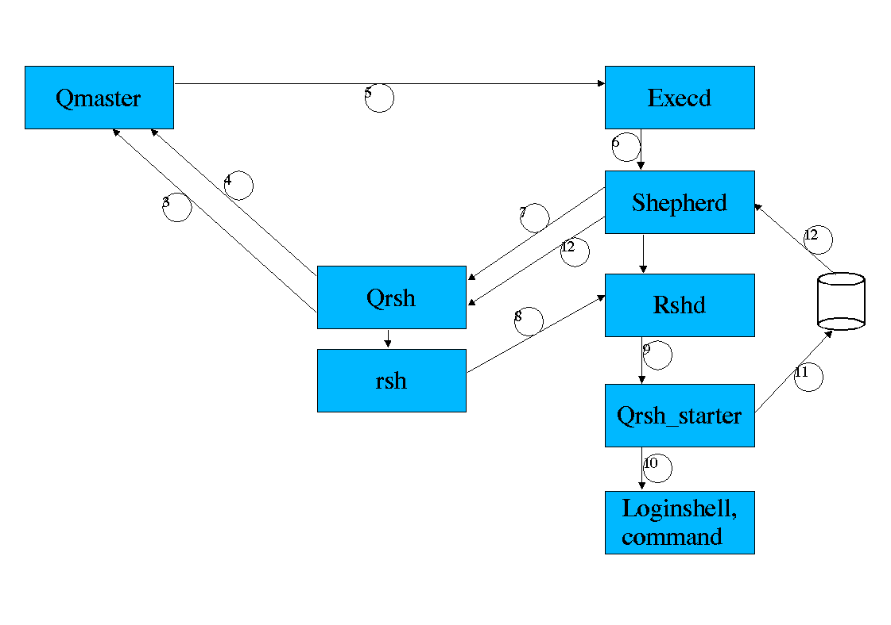
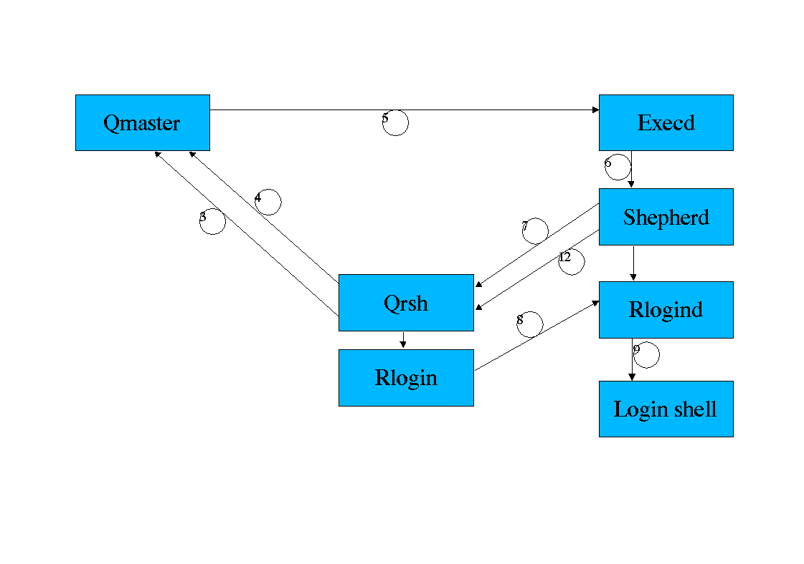

QRSH- Queue Remote Shell
Overview
Qrsh starts a job similar to qsub, with the difference that
-
stdin/stdout/stderr is not redirected to a file but to the callers iostreams,
usually the current terminal
-
it is possible to start binaries
-
the returncode of the executed command is propagated to the caller by qrsh
-
if no command is specified, an rlogin session is started
-
if a special commandline option -inherit is specified, qrsh will start
a subtask in an existing Gridengine parallel job
Qrsh uses the rsh/rshd mechanism (or any similar tool like ssh) to start
the remote process and redirect io.
If nothing else is configured, qrsh will start
$SGE_ROOT/utilbin/$ARCH/rsh,
the rshd used is $SGE_ROOT/utilbin/$ARCH/rshd, which is a rshd
derived from NetBSD code extended by some code to allow process control
and collection of usage information (see also
3rdparty/remote).
To configure the system rsh/rshd or an other mechanism the values rsh_client
and rsh_daemon resp. rlogin_client and rlogin_daemon
in the cluster configuration have to be set.
Controll flow
Remote execution
If a user submits a job with qrsh, the following actions are taken
-
The commandline is parsed and split into codine options and commandline
to be executed
-
A job object is created
-
The job is submitted (communicated to qmaster)
-
qrsh waits for the job to be started; in regular intervals it requests
the job status from qmaster, to detect if the job has eventually been deleted
-
qmaster sends order to start job to execd
-
execd starts shepherd
-
The corresponding shepherd contacts qrsh over a socket connection and passes
the execution host and the port on which a rshd will be started.
-
qrsh forks and executes a rsh command that connects to the specified host
and port number on the execution host, then it waits for the command to
exit
-
On the execution side, rshd will start a qrsh_starter command
-
The qrsh_starter sets up the jobs environment, starts a users login shell
and executes the specified commandline
-
After the command exits, the qrsh_starter writes the exit code of the command
to a file and exits, rshd exits
-
The corresponding shepherd collects job information like usage and exit
code, it communicates the exitcode to qrsh
-
qrsh exits with the exitcode of the command or an error, if an error in
the mechanism occurred.

Remote login
If a user submits a login session with qrsh (rlogin), the following actions
are taken
-
The commandline is parsed (codine options)
-
A job object is created
-
The job is submitted (communicated to qmaster)
-
qrsh waits for the job to be started; in regular intervals it requests
the job status from qmaster, to detect if the job has eventually been deleted
-
qmaster sends order to start job to execd
-
execd starts shepherd
-
the corresponding shepherd contacts qrsh over a socket connection and passes
the execution host and the port on which an rlogind will be started.
-
Qrsh forks and executes an rlogin command that connects to the specified
host and port number on the execution host, then it waits for the command
to exit
-
On the execution side, rlogind will spawn a login which creates a login
shell
-
After the login shell exits, rshd exits
-
The corresponding shepherd collects job information like the usage and
will communicate the job end to qrsh
-
qrsh exits with the exitcode 0 or an error, if an error in the mechanism
occurred.

Process hierarchie
Client side
Qrsh forks a rsh or an rlogin command, if rsh shall handle stdin (no -nostdin
option to qrsh), it forks another child process that handles stdin.
Qrsh -> rsh -> rsh
qrsh -> rlogin
Execution side
Standard
In the standard case, the command will be executed in a users login shell:
execd -> shepherd -> rshd -> qrsh_starter -> loginshell -> command
without login shell
If the option -noshell is passed to qrsh, the command will be executed
directly without a wrapping login shell.
Execd -> shepherd -> rshd -> qrsh_starter -> command
with wrapper script
A wrapper script can be specified, that for example sets up a special environment,
e.g. A clearcase view.
A wrapper script is defined in the environment variable QRSH_WRAPPER.
Execd -> shepherd -> rshd -> qrsh_starter -> wrapper -> command
rlogin case
Execd -> shepherd -> rlogind -> login shell
Copyright 2001 Sun Microsystems, Inc. All rights reserved.